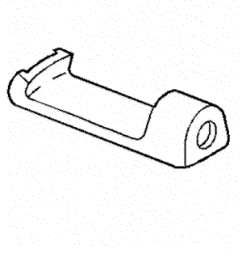

Spark |
||||||||
|
|
|
|||||||
Ilustración | Nº de herramienta / Descripción |
|---|---|

| CH-904 KM-904 Bastidor base |

| CH-49290 Herramienta de soporte del motor |
|
 | DT-586 J-23129 Herramienta universal de desmontaje de retenes |
|
| DT-7004 J-6125-1B Martillo de percusión con adaptador |
|
| DT-46450-01 DW240-010-01 Indicador de presión de aceite |
|
| DT-47522 Fijación de empujador de válvula |
|
| DT-47523 Taqué de válvula |
|
| DT-47524 Compresor de muelles del embrague de baja |
|
| DT-47525 Compresor de muelles del embrague de marcha atrás |
|
| DT-47526 Compresor del muelle del embrague bajo y marcha atrás |
|
| DT-47527 Compresor de muelles del embrague de alta |
|
| DT-47533 Instalador del retén de aceite del eje primario |

| DT-47534 Instalador del retén de aceite del lado del diferencial (lado del cárter del aceite) |
|
| DT-47535 Instalador del retén de aceite del lado delantero del diferencial |
|
| DT-49070 Herramienta de desmontaje y montaje de pernos del convertidor |
|
| DT-50046 DW240-010-02 Adaptador de manómetro de presión de aceite |
|
| DT-50166 Herramienta de desmontaje del conjunto del piñón secundario |

| DT-50189 Punzón botador |
| © Copyright Chevrolet Europe. All rights reserved |